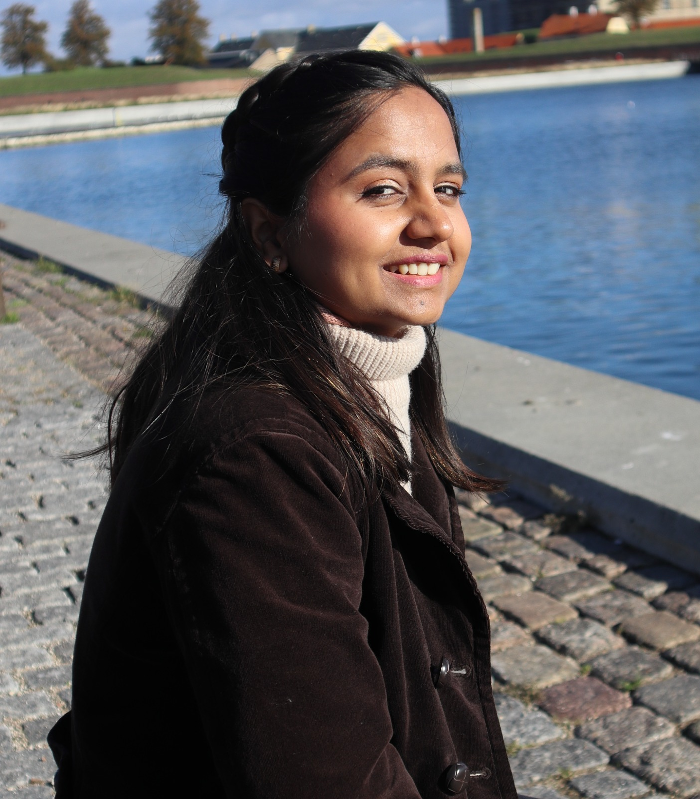

Introduction
 Hello! I am a PhD student at the Wind Energy Department in the Technical University of Denmark. My current research concerns optimization/control techniques for active distribution networks with a large share of renewable generation. I enjoy tackling complex optimization and modelling challenges in the area of power systems. Some of my research interests include power system optimization, integrating renewable energy sources in power systems, photovoltaic, wind and hybrid plants along with storage technologies to enable cleaner energy sources. I firmly believe that the energy needs of our future will have to be strongly supported by renewable/green sources. I am passionate about ensuring a sustainable, safe, and equitable future for everyone. I am excited to be working and growing in this area!